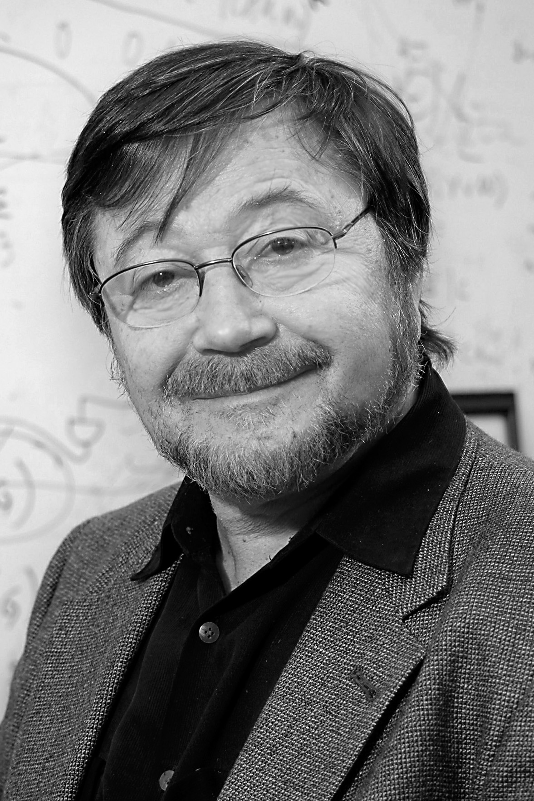

|  |
2011 год Judea Pearl (1936) «За фундаментальный вклад в искусственный интеллект посредством разработки исчисления для проведения вероятностных и причинно-следственных рассуждений (англ. calculus for probabilistic and causal reasoning)» |
Страна: Израиль, США
Образование: Доктор философии в области электротехники, Йоркский университет, 1965. Магистр науки в области физики, Ратгертский университет, 1965
О лауреате
В 1984 году публикует книгу “Heuristics: Intelligent Search Strategies for Computer Problem Solving”, в которой были представлены новые результаты в области традиционных алгоритмов поиска, таких, как А* и игровых алгоритмов, поднявшие исследования в этом направлении на новый уровень. В 1988 году публикует фундаментальный труд “Probabilistic Reasoning in Intelligent Systems”, ставший революционным для сферы искусственного интеллекта. Через несколько лет ведущие исследователи в области логики и нейронных сетей приняли вероятностный подход, кратко называемый теперь современным подходом, в проектировании ИИ. В этой книге Pearl предлагает новый подход к построению вероятностных моделей с использованием ориентированных графов без циклов — вероятностные графические модели: Байесовские сети и Марковские сети. После публикации книги Байесовские сети стали важной частью исследований в области машинного обучения, статистики, распознавания естественного языка, вычислительной биологии, машинного зрения, робототехники и когнитивных наук. В 2000 году выходит ещё один фундаментальный труд — книга “Causality: Models, Reasoning, and Inference”. В книге предложен завершённый строгий математический аппарат для выявления причинно-следственных связей в данных, проведения причинно-следственных рассуждений, рассуждений с использованием, интервенционального анализа и do-исчисления (do-calculus).
Ключевые слова: Artificial Intelligence, Causality
Краткая библиография
| 1. |
Pearl, J., “Asymptotic properties of minimax trees and game-searching procedures,” Artificial Intelligence, 14, pp. 113–138, September 1980. Одна из первых работ по созданию свойств «фазового перехода» для комбинаторной задачи; ввел новые математические методы в литературу по искусственному интеллекту. |
| 2. |
Pearl, J., “Knowledge versus search: A quantitative analysis using A*,” Artificial Intelligence, Vol. 20, pp. 1–13, 1983. Доказательство первых результатов, относящихся к эвристической точности и сложности алгоритма поиска. |
| 3. |
Pearl, J., “On the nature of pathology in game searching,” Artificial Intelligence, Vol. 20, pp. 427–453, 1983. В статье доказано, что при стандартной модели игровых деревьев более глубокий поиск не обязательно улучшает игру; и показал, что этот парадокс разрешен путем правильного вероятностного обновления целей. |